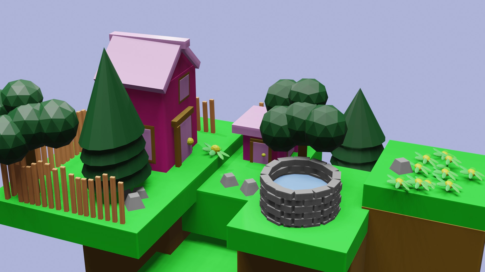

Welcome to my world of art, where I share my art progress and stories. Feel free to take a look at my work, just do not steal anything we have cameras at this little museum.
I write poems, and stories, sketch/draw, and make digital art- Although I am not a pro. I am into photography as well.
Two Emo Roommates
Friday noon, Two college roommates are ready to go for a rave. Hatley walked out of her room heading to the living room.
Hatley: "Hey, you ready for the rave? "
Courtney:*does not bother to look up from the console* "Just one more level, chill. "
Hatley rolls her eyes, just then their friend, named Kevin, walks into their apartment with a spear key he possessed. He wore a black tank top with blue denim baggy shorts, cowboy boots, and a scarf tied stylishly around his neck.
Kevin: "Your ride has arrived."
Hatley groans, not in the mood for his goofy personality.
Hatley: "Courtney is gonna waste time just, "
Hatley looks at him thinking of how he could make him useful.
"Just take a picture of us,"
Kevin shrugged and got out his phone, as Hatley found her way onto the couch with Courtney.

Angel
Dear God,
I always wondered why I was under shelter,
With warm clothes and a family
While thy children with kinder souls
Withered away on roads or in orphanages
The begging little ones on the road
Some who only had themselves to survive
There shall never trespass against us, even be enemy
A reckoning came to light
Thee perfect child, oh lucifer
A banished child, brighter than brightest star
Thy was forsaken as punishment for being thee greedy last born?
Thy reflected thy pain onto the world as part of thy's revolution, the anger
Uncruel to thy to forsake the world, cruel to the world to be forsaken.
NATURE
Afforestation Vs Deforestation
As an asthma patient, I have always been limited to means that provide little air, so least to say that is a hard life. This lead me to reminisce about nature and greenery. In a society where bush burning is common, I was inspired by the idea of contrasting what the world was years ago to the Mordernity we live in now.